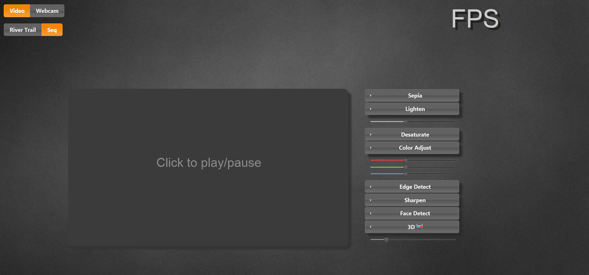
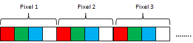
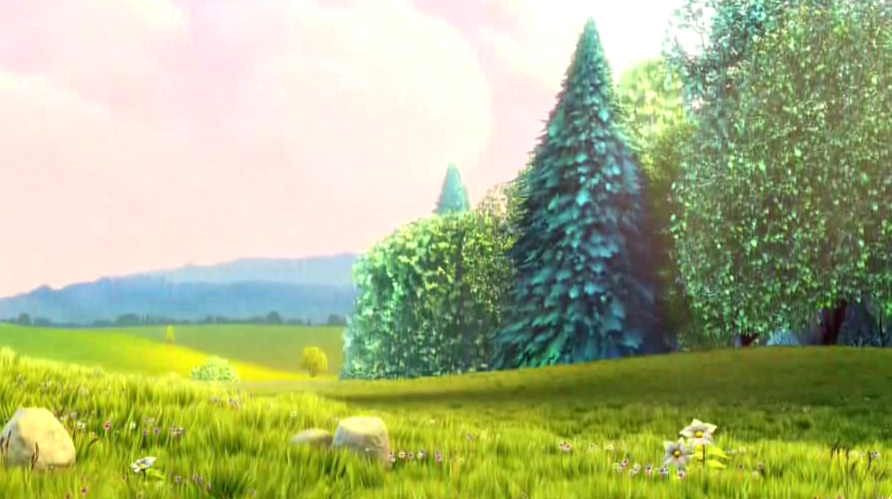
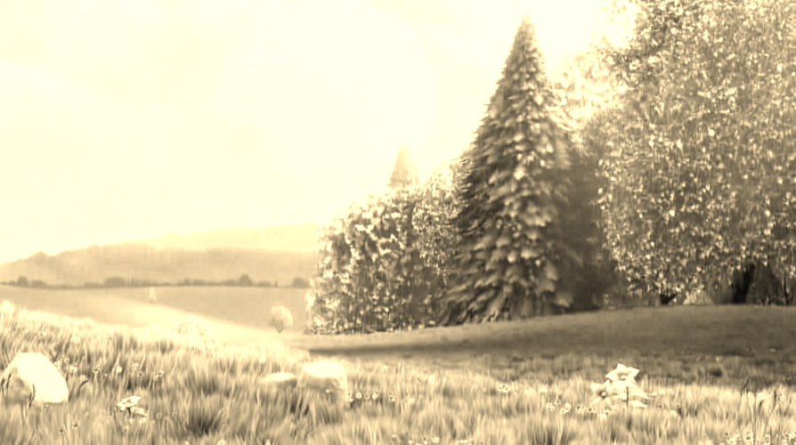

Setup
Download and Install
If you have not already, download and install River Trail. To be able to use a video stream from a webcam you will also need Rainbow.Configure
Because of Firefox's security policies, you may have to install Apache (or any other webserver) and configure it so that it serves files from the River Trail directory.Verify
Check if you can run the examples in rivertrail/examples by loading them in Firefox. If you can, you are good to go.The Skeleton
The directory rivertrail/examples/video-app contains a skeleton for the video application that you can start with. Load up the index.html file in this directory in Firefox and you should see the default screen for the application skeleton:  The large box in the center is a Canvas that is used for rendering the video output. The video input is either a HTML5 video stream embedded in a video tag or live video caputured by a webcam. On the left of the screen you will see the various filters that can applied to this input video stream - sepia toning, lightening, desaturation etc. Click on the box in the center screen to start playback and try out these filters. To switch to webcam video, click the "Webcam" toggle in the top-left corner. The sequential JavaScript versions of the filters on the right are already implemented and in this tutorial we will implement the "parallel" versions using River Trail. Before we dive into implementation, lets look at the basics of manipulating video using the Canvas API.Manipulating pixels on Canvas
Open up main.js in your favorite code editor. This file implements all the functionality in this web application except the filters themselves. When you load the page, the "doLoad()" function is called after the body of the webpage has been loaded. This function sets up the drawing contexts, initializes the list of filters (or kernels) and assigns a click event handler for the output canvas. The computeFrame() function is the workhorse that reads an input video frame, applies all the selected filters on it to produce an output frame that is written to the output canvas context. The code above shows how a frame from a HTML video element is drawn to a 2D context associated with a canvas element.
// main.js : computeFrame()
output_context.drawImage(video, 0, 0, output_canvas.width,
output_canvas.height);
After this video frame is drawn to canvas, we need to capture the
pixels so that we can apply our filters. This is done by calling
getImageData() on the context containing the image we want to
capture.
// main.js : computeFrame(), line number 249
frame = input_context.getImageData(0, 0, input_canvas.width,
input_canvas.height);
len = frame.data.length;
w = frame.width ; h = frame.height;
Now we have an ImageData object called "frame". The "data" attribute of this
object contains the pixel information and the "width"/"height" attributes
contain the dimensions of the image we have captured.
The data attribute contains RGBA values for each pixel in a row-major format.
That is, for a frame with h rows of pixels and w columns, it contains an array
of length w * h * 4 as shown below:
So for example to get the color values of a pixel in the 100th row and 50th column in the image, we would do:
var red = frame.data[100*w*4 + 50*4 + 0]; var green = frame.data[100*w*4 + 50*4 + 1]; var blue = frame.data[100*w*4 + 50*4 + 2]; var alpha = frame.data[100*w*4 + 50*4 + 3];To set, for example the red value of this pixel, simply write the new value at the offset shown above in the frame.data buffer.
Sepia Toning
Sepia Toning is a process performed on black-and-white print photographs to give them a warmer color. This filter simulates the sepia toning process on digital photographs or video.   Let us first look at the sequential implementation of this filter in the function calledsepia_sequential() in filters.js.
function sepia_sequential(frame, len, w, h, ctx) {
var pix = frame.data;
var r = 0, g = 0, b = 0;
for(var i = 0 ; i < len; i = i+4) {
r = (pix[i] * 0.393 + pix[i+1] * 0.769 + pix[i+2] * 0.189);
g = (pix[i] * 0.349 + pix[i+1] * 0.686 + pix[i+2] * 0.168);
b = (pix[i] * 0.272 + pix[i+1] * 0.534 + pix[i+2] * 0.131);
if(r>255) r = 255;
if(g>255) g = 255;
if(b>255) b = 255;
if(r<0) r = 0;
if(g<0) g = 0;
if(b<0) b = 0;
pix[i] = r;
pix[i+1] = g;
pix[i+2] = b;
}
ctx.putImageData(frame, 0, 0);
}
Remember from the previous snippet that the frame.data buffer
contains color values as rgbargbargba.... The
for loop in line 822
iterates over this buffer and for each pixel it reads the red, green
and blue values which are in pix[i], pix[i+1], pix[i+2] respectively.
It computes a weighted average of these colors to produce the new
red, green, blue values for that pixel.